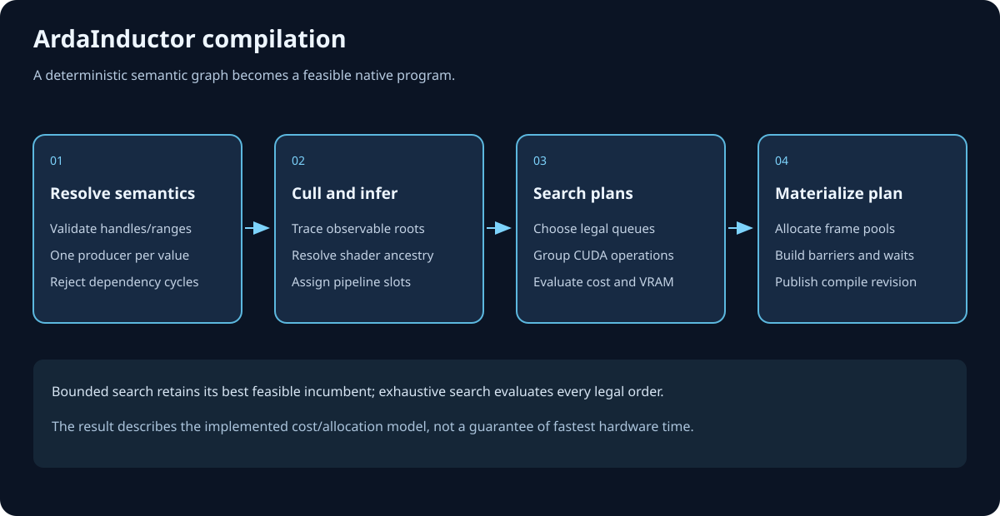
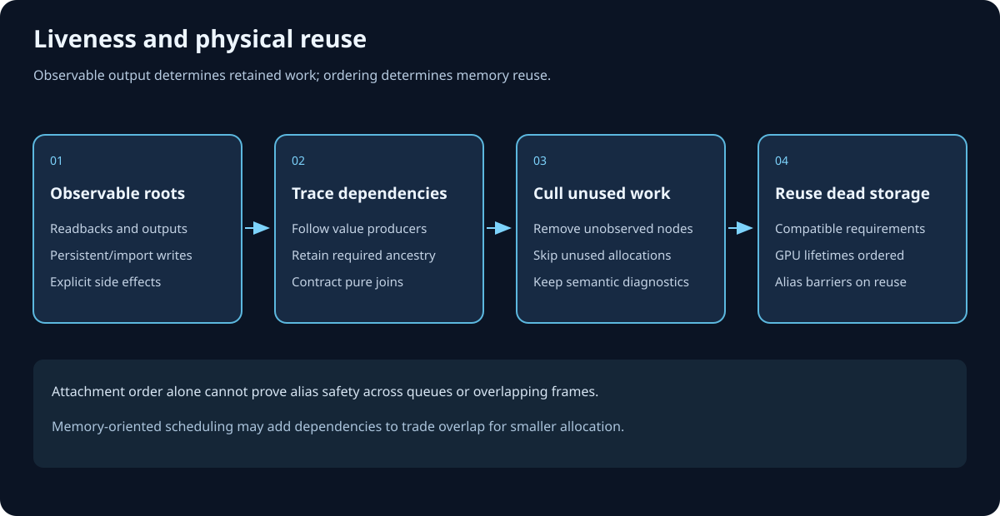
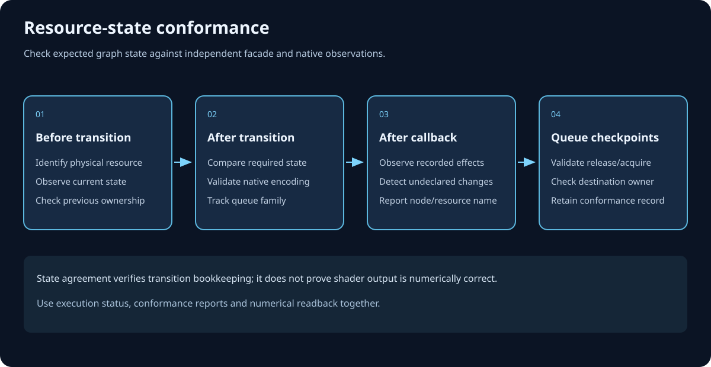

Graph theory made executable
Compilation and scheduling
Compilation turns a registered pass graph into a validated, deterministic execution plan. This chapter first derives the general compiler problem, then follows the current FARDGCompiler in its exact fourteen-stage source order. The result is device-independent metadata: no physical allocation, command recording, barrier command, or queue submission occurs here.
Objectives and prerequisites
By the end of this chapter, you should be able to:
- explain why a render graph is a directed acyclic graph and why ArdaRenderGraph does not run a separate topological sort;
- predict which passes survive culling, including the different roles of data and synchronization-only edges;
- derive inclusive resource lifetimes in compact execution-index space;
- predict queue fallback, cross-queue dependencies, logical transitions, UAV ordering, and raster-group metadata; and
- distinguish compilation metadata from the physical work deferred to execution.
You should already understand a pass, a logical resource, a resource state, and basic read-after-write, write-after-read, and write-after-write hazards. The glossary entry for RAW / WAR / WAW hazards is the compact reference.
From a general DAG to an execution plan
Vertices, edges, and meaning
A general directed graph consists of vertices and one-way edges. In a render graph, vertices are passes. An edge u → v says that u must precede v. The reason may be data flow—v consumes a value produced by u—or an ordering constraint that establishes safe sequencing without making u's result semantically necessary.
A graph is acyclic when no directed path returns to its start. Every DAG has at least one topological order: a linear sequence in which every predecessor appears before every successor. A conventional compiler can discover this sequence with Kahn's algorithm or a depth-first traversal. If it cannot consume every vertex, a cycle exists.
What a graph compiler usually derives
Once an order exists, a general render-graph compiler can remove unreachable work, compute resource live intervals, assign queues, synthesize state transitions, and group compatible operations. Each result depends on an earlier fact:
- Declarations must be valid before optimization, or dead code could conceal an invalid program.
- Observable outputs define the backward slice that must remain live.
- Only live work should contribute to allocation intervals and transitions.
- Queue selection must precede state normalization and cross-queue synchronization.
- Final metadata must be internally replayable before it is published.
ArdaRenderGraph's stronger input contract
ArdaRenderGraph requires every dependency edge to point strictly forward in stable pass-handle order. Consequently, registration order is already a valid topological order. Compilation verifies the invariant; it does not reorder passes. The final execution order is exactly the registration-order subsequence left after culling, including the synthetic boundary passes.
This is stronger than merely requiring an acyclic graph. It rejects a backward edge even when the overall graph would remain acyclic. In exchange, ordering is stable, cycle detection is reduced to a local handle comparison, and build-time hazard construction can reason only toward later passes.
Why the compiler has these stages
The builder accumulates facts incrementally: stable pass and resource records, reflected access declarations, producer lists on consumers, resource readers and last producers, extraction requests, and context capabilities. These facts are convenient for registration but incomplete for execution. Compilation changes the representation rather than changing the declared algorithm.
- Registration representation
- Consumer-side predecessor lists, logical resource uses, requested pass flags, and builder-wide options.
- Liveness representation
- Observable roots and data-producer reachability, yielding a live registration-order subsequence.
- State representation
- Per-pass requirements lowered into before/after transition records with explicit ordering flags.
- Scheduling representation
- Selected pipelines, reverse adjacency, queue dependencies, descriptive async bounds, and raster compatibility groups.
- Allocation representation
- Inclusive first/last use intervals expressed in compact execution indices.
The ordering follows data dependencies between compiler phases. Pipeline selection is needed before async state normalization. Reverse edges are needed before forward async reachability. Culling must precede interval, lifetime, transition, dependency, and group output. Barrier compilation must precede transition replay. Publication is last so a failed intermediate stage never exposes a successful compiled flag.
The exact current FARDGCompiler order

-
Validate before compile
The compiler validates resource ownership flags and backing, legal initial and final states, known pass flags, texture ranges, buffer ranges, acceleration-structure accesses, extraction records, and produced-before-read behavior. Validation runs before culling, so an invalid dead pass is still invalid. Optimization is not a way to hide a broken declaration.
-
Check extracted resources were produced
A graph-owned extracted texture or buffer must have a valid last producer. External resources are exempt because their data enters the graph from outside. This stage is narrower than stage 1: it specifically prevents publishing uninitialized graph-owned storage. See the exact extraction contracts for
QueueTextureExtractionandQueueBufferExtraction. -
Append and wire
GraphEpilogueThe compiler appends a synthetic epilogue. For each external or extracted resource, its last writer becomes a data producer of the epilogue. Readers become synchronization-only producers. This distinction is deliberate: a write that determines an externally visible result must stay live; a trailing read may need ordering if it survives for another reason, but must not become live merely because the epilogue exists.
-
Assign pipelines
Every pass starts from a deterministic graphics fallback. Outside immediate mode, a non-sentinel pass requesting
Copyuses the copy pipeline only if a copy queue exists and every texture and buffer declaration is a nonzero subset ofCopySource | CopyDest; any acceleration-structure declaration rejects copy compatibility. Otherwise, a pass requestingAsyncComputeuses async compute only if a compute queue exists and all states are compute-compatible. Graphics-only states—render target, depth read/write, and present—reject async. A pixel-shader read is accepted only when the non-pixel read bit is also present, after which the pixel bit is removed for async execution. Every failed eligibility test falls back to graphics rather than failing compilation.The possible results are defined by
EARDGPipeline; availability comes fromFARDGQueueCapabilities. -
Build the consumer mirror
Registration records predecessor handles on each consumer. Compilation clears reverse lists, sorts producer lists, verifies that every producer exists and has a strictly smaller handle than its consumer, and mirrors both data and synchronization edges onto producers. The products are data consumers and synchronization consumers. This is where the forward-edge invariant proves that registration order is topological and cycles are impossible.
-
Cull passes
Normal mode initially marks every non-sentinel pass dead, then starts a backward worklist from the epilogue and every pass carrying
NeverCull. The walk follows data-producer edges only. Synchronization-only producers do not preserve liveness. Surviving passes are emitted by scanning the registry from beginning to end, so relative order never changes. Immediate mode skips the analysis and retains every pass. -
Rebuild live resource intervals
Build-time first and last uses include declarations made by passes that may now be dead. The compiler therefore resets every resource's usage markers and replays texture, buffer, and acceleration-structure declarations in live execution order. External and extracted resources receive an additional epilogue use because graph-exit state and ownership extend through that boundary.
-
Compile resource lifetimes
Resource records store pass handles, but allocation needs positions in the compact live sequence. The compiler maps each live handle to an execution index and emits inclusive
[firstUse, lastUse]intervals. Textures, then buffers, then acceleration structures are emitted in registry order. A texture or buffer is marked transient-eligible only when it carries the transient flag and is neither external nor extracted; acceleration structures are not transient candidates in the current implementation. Immediate mode or extended-lifetime debugging widens every interval to the full execution sequence. -
Compile barriers
The compiler initializes unknown logical states as
Common, replays only live passes, merges declarations that address the same tracked unit within a pass, and emits logical transition records. Textures are tracked independently per mip level × array slice. Buffers have one state slot for the whole logical buffer even though declared byte ranges remain available for bounds and execution-access validation. Acceleration structures also use whole-object state.Equal UAV state is not a no-op: it emits a record marked for UAV ordering. Conservative-barrier mode can mark other equal, non-
Commonstates as forced barriers. Conflicting states involving a write within the same pass fail; distinct compatible read-only states are combined. External and extracted resources receive graph-exit transitions on the epilogue. -
Validate transitions
An independent replay starts from declared initial states, checks that every compiled
stateBeforeequals the replayed current state, appliesstateAfter, and verifies that each pass's declaration is satisfied. It also verifies graph-exit final states. This stage tests compiler output rather than trusting barrier generation. -
Compile async metadata
For each live async-compute pass, the compiler walks backward through both edge kinds across non-graphics work to find the latest reachable graphics predecessor, and forward to find the earliest reachable graphics successor. The prologue and epilogue are fallbacks. The resulting
mAsyncForkandmAsyncJoinare descriptive bounds only. They do not themselves insert a wait, signal, split, or submission. -
Compile queue dependencies
For each live consumer, data and synchronization producers are combined, sorted, and deduplicated. A live edge whose endpoints use different pipelines produces one
FARDGQueueDependency; culled and same-pipeline edges produce none. These records—not fork/join descriptions—drive execution-time cross-queue waits. -
Compile raster groups
A maximal adjacent run of graphics raster passes receives a dense group index when every pass is groupable and has an identical logical attachment signature. A non-raster pass, an async or copy pass,
SkipRenderPass, or different bindings breaks the run.mRasterGroupand the group count are metadata only: compilation does not merge command lists, callbacks, or native render passes. -
Publish compiled state
Only after all previous stages succeed does the compiler set the builder's compiled flag and return the stable
FARDGCompileResult. Subsequent calls return that cache. Publication last gives the builder a simple all-or-not-published boundary.
Exact data products
Compilation mutates per-pass compiler state and fills the builder-owned result. The distinction matters when inspecting a graph.
In FARDGCompileResult
mPrologue: the synthetic graph-entry handle created with the builder.mEpilogue: the synthetic graph-exit handle appended during compilation.mExecutionOrder: live pass handles in deterministic registration order, including sentinels.mResourceLifetimes: live logical intervals, with resource kind, registry index, inclusive first/last execution indices, and transient eligibility.mQueueDependencies: producer, consumer, and endpoint pipelines for cross-queue edges, emitted in consumer execution order.mRasterGroupCount: the number of dense raster compatibility groups.
In each FARDGPassState
- sorted data and synchronization predecessor lists plus their mirrored consumer and synchronization-consumer lists;
- the selected
mPipelineandmbCulledresult; - texture, buffer, and acceleration-structure transition vectors;
- descriptive async fork and join handles; and
- the raster group index and logical raster binding signature.
Culling and execution-index lifetimes

Roots answer “why must this run?”
The epilogue is a root because external and extracted writes are observable after the graph. NeverCull passes are roots because the caller has declared an effect outside ordinary resource reachability. Sentinels remain live as graph boundaries. Starting from those roots, following producer edges backward retains precisely the data ancestry needed to compute them.
A synchronization-only predecessor answers a different question: “if both passes run, what order is safe?” It does not answer “is the predecessor's result needed?” Following it during culling would turn a WAR ordering edge into false liveness and retain dead readers or writers. The compiler therefore uses both edge kinds for queue synchronization and async reachability, but only producer edges for culling.
Why compact execution indices matter
Pass handles reflect stable registration positions and can contain gaps after culling. Allocation, however, cares about the sequence that will execute. If handles 2, 5, and 9 survive, their execution indices are 0, 1, and 2 within the relevant subsequence. A lifetime ending at handle 9 therefore ends at compact index 2, not at 9.
Intervals are inclusive. Two logical transient resources can be considered non-overlapping only when one's last use is strictly less than the other's first use. External and extracted resources extend to the epilogue and are never transient candidates. The compiler computes logical opportunities; execution decides whether a compatible physical object can actually be reused.
Barrier lowering: logical state over time

Textures: mip × array slice
For a texture with M mips and S array slices, the compiler keeps M × S state cells. A declared subresource range is resolved against the description and expanded into those cells. Aliasing views of the same logical texture meet in the same grid. Requirements are first merged per pass and per cell, then compared with the cell's current state to produce one-cell transition records with explicit before and after states.
Buffers: one state slot
Buffer access records preserve byte ranges for validation, but barrier compilation merges all accesses to a logical buffer into one required state. Disjoint ranges cannot simultaneously carry independent states in the current model. This is conservative and portable, but can produce more whole-buffer transitions than a range-aware backend compiler.
Reads, writes, UAVs, and forced barriers
Unknown adopts the first requirement. Equal requirements remain equal. Distinct read-only states combine as a bit mask. If either conflicting requirement writes—render target, depth write, copy destination, resolve destination, acceleration-structure write, or unordered access—the pass is invalid because one tracked unit cannot safely satisfy both states at once.
An equal state normally needs no transition, but repeated UAV access still needs memory ordering: completion and visibility of earlier unordered writes cannot be inferred from an unchanged state enum. Such a record carries the UAV-barrier flag. With mbConservativeBarriers, equal non-UAV, non-Common states can carry a forced-barrier flag to diagnose missing ordering assumptions.
Logical continuity versus physical correction
Compilation can validate only a logical resource's declared initial state and pass-to-pass continuity. At execution, a logical transient may receive a pooled physical resource last used in a different state. The executor therefore corrects the transition's physical before-state after materialization and pool reuse are known. This is not a compiler inconsistency: logical validation proves graph declarations; execution reconciles the chosen physical identity.
Queues, async descriptions, and raster groups
Queue requests are preferences with a safe fallback
Async compute and copy flags request specialized execution; they do not guarantee it. They are mutually exclusive: a pass requesting Copy cannot also request Compute or AsyncCompute, while AsyncCompute requires Compute. Queue capability, immediate mode, sentinel status, and every declared state then determine whether the legal request selects its specialized pipeline. If that pipeline is unavailable or the pass is incompatible, the pass runs on graphics.
This fallback keeps one graph portable across a device with dedicated copy and compute queues, a device exposing only graphics, and diagnostic immediate mode. It also prevents a supposedly copy-only command list from receiving shader or acceleration-structure state.
Cross-queue edges are operational
A queue dependency exists only when a live edge crosses selected pipelines. Execution uses the producer's submitted queue instance to make the consumer queue wait. Same-pipeline order is already provided by that ordered queue stream. Both data edges and ordering-only edges can produce cross-queue waits.
Fork and join are descriptions, not synchronization
Async fork/join fields summarize the nearest reachable graphics boundaries around async work. They are useful for inspection, scheduling visualization, and future optimization. The current synchronization authority is the explicit queue-dependency list. Treating fork or join as an implied barrier would duplicate or invent behavior not present in the compiler.
Raster groups are compatibility labels
A raster group says that adjacent live graphics raster passes have identical logical attachments and are candidates for coordinated handling. It does not promise a native subpass, render-pass merge, callback fusion, or one command list. A later execution strategy may use the label, but correctness cannot depend on such a merge occurring.
Worked example: predict the compiled graph
Assume normal mode, available copy and compute queues, all graph-owned resources initially Common, and the following registration order after the synthetic prologue. Output is extracted with final state PixelShaderResource.
- UploadScene requests Copy, writes whole buffer
SceneasCopyDest. - BuildLightGrid requests AsyncCompute, reads
SceneasNonPixelShaderResource, writes bufferGridas UAV. - Shadow is Raster, writes texture
ShadowMapasDepthWrite. - DeadHistogram is Compute, reads
ShadowMapand has an ordering-only edge toTonemap, but produces no consumed or external result. - GBuffer is Raster, writes
SceneColorandDepthwith attachment signature A. - Lighting is Raster, reads
GridandShadowMap, and writes the sameSceneColorandDepthattachments with signature A. - Tonemap is Raster, reads
SceneColorand writes extractedOutputwith attachment signature B.
Data edges are UploadScene → BuildLightGrid, BuildLightGrid → Lighting, Shadow → Lighting, GBuffer → Lighting, and Lighting → Tonemap. Compilation appends GraphEpilogue and adds Tonemap → GraphEpilogue because Tonemap is the last producer of extracted Output. The explicit DeadHistogram → Tonemap edge is synchronization-only and therefore supplies no liveness.
Prediction 1: culling and order
GraphEpilogue retains Tonemap, which retains Lighting, which retains BuildLightGrid, Shadow, and GBuffer; BuildLightGrid retains UploadScene. DeadHistogram is reachable only through ordering-only edges, so it is culled. The compact execution order is:
0 Prologue, 1 UploadScene, 2 BuildLightGrid, 3 Shadow, 4 GBuffer, 5 Lighting, 6 Tonemap, 7 GraphEpilogue.
No topological reordering has occurred. Removing DeadHistogram merely closes its registration-order gap.
Prediction 2: pipelines and dependencies
UploadSceneselects Copy because all its states are copy-compatible.BuildLightGridselects AsyncCompute because the compute queue exists and its shader/UAV states are compatible.Shadow,GBuffer,Lighting, andTonemapselect Graphics.- Queue dependency Copy → AsyncCompute is emitted for UploadScene → BuildLightGrid.
- Queue dependency AsyncCompute → Graphics is emitted for BuildLightGrid → Lighting.
- All other live edges are same-pipeline or sentinel relationships and need no specialized cross-queue record unless their endpoint pipelines differ.
For BuildLightGrid, the latest reachable graphics predecessor is the prologue because UploadScene is copy work; its earliest reachable graphics successor is Lighting. These fork/join values describe the span, while the two queue dependencies enforce it.
Prediction 3: lifetimes
Scene:[1,2].Grid:[2,5].ShadowMap:[3,5].SceneColor:[4,6].Depth:[4,5].Output:[6,7], extended through the epilogue because it is extracted.
No histogram resource receives a lifetime because its only pass was culled. Even if Output carries a transient creation flag, extraction makes its emitted transient eligibility false.
Prediction 4: representative logical barriers
Scene: Common → CopyDest at UploadScene, then CopyDest → NonPixelShaderResource at BuildLightGrid.Grid: Common → UnorderedAccess at BuildLightGrid, then UnorderedAccess → the graphics shader-read requirement at Lighting.ShadowMap: Common → DepthWrite at Shadow, then DepthWrite → shader read at Lighting for each addressed mip × slice cell.SceneColor: Common → RenderTarget at GBuffer; the equal RenderTarget requirement at Lighting is not a UAV barrier and is forced only in conservative mode; then RenderTarget → shader read at Tonemap.Output: Common → RenderTarget at Tonemap, then RenderTarget → PixelShaderResource on GraphEpilogue.
If a second live pass accessed Grid again as UAV without changing state, its equal-state record would carry the UAV ordering flag. The before-state eventually recorded against a reused pooled buffer may be corrected at execution after the physical allocation is selected.
Prediction 5: raster groups
After culling, Shadow, GBuffer, Lighting, and Tonemap are adjacent raster passes. Shadow's attachment signature differs, so it starts group 0. GBuffer starts group 1 and Lighting joins group 1 because signature A is identical. Tonemap starts group 2 because signature B differs. The result reports three groups, but no callbacks or native render passes have been merged.
Performance and scaling
Let P be pass count, E edge count, R resource count, and C the number of addressed texture mip × slice cells replayed across live passes.
- Validation, culling, interval replay, lifetime emission, queue dependencies, and raster grouping are broadly linear in registered records, declarations, passes, and edges.
- Consumer mirroring sorts each predecessor list, costing approximately the sum of
d log dover consumer in-degrees. - Barrier compilation expands texture ranges to cells. Its cost grows with C, and the current implementation also sizes and scans resource-indexed temporary arrays per live pass. Large registries with sparse per-pass use therefore carry overhead beyond the declarations themselves.
- Async fork/join performs graph walks per async pass. In a dense worst case it can approach A × (P + E), where A is the number of async passes.
- Memory includes adjacency lists, execution order, lifetimes, queue dependencies, pass-local transition vectors, and temporary per-subresource state grids.
Deterministic registry scans and stable handles favor reproducibility and debugging. If compilation becomes measurable, profile cell expansion, sparse-resource temporary arrays, and repeated async reachability before changing graph semantics. Culling can reduce later work substantially, which is why live intervals and barriers are rebuilt after it.
Alternatives and platform implications
Explicit topological sorting
A compiler could allow dependencies in any direction and run Kahn's algorithm. That accepts more registration patterns and can expose several valid schedules, but it needs cycle diagnostics and a tie-breaking policy. It would also make “registration order is execution order” false. ArdaRenderGraph chooses the stronger forward-edge invariant for determinism and simpler construction.
Scheduler-driven reordering
A more aggressive compiler could reorder independent passes to reduce peak memory, increase queue overlap, or improve render-pass locality. Such scheduling is an optimization problem constrained by hazards and queue capabilities. The current compiler does not perform it; authors influence order by registration and dependencies.
Range-aware buffer state and coalesced texture transitions
Tracking buffer byte intervals could permit disjoint ranges in different states, while coalescing adjacent texture cells with identical transitions could shrink metadata. Both approaches increase interval bookkeeping and backend translation complexity. The current texture-cell/whole-buffer split is explicit and predictable.
Backend-specific barriers
D3D12, Vulkan, and other explicit APIs differ in state vocabulary, ownership transfer, stage masks, layouts, and barrier forms. Compilation intentionally emits RHI-level logical transitions. Execution, after physical resources and selected queues are known, maps them to platform behavior. A graphics-only device remains valid because copy and async requests fall back to graphics.
Native render-pass or subpass fusion
A backend could use raster-group metadata to build native render-pass structures or preserve attachments across callbacks. That is a later execution optimization and must remain optional across platforms. Group membership alone is not an execution guarantee.
Compiler invariants
- Every dependency producer handle is valid and strictly smaller than its consumer handle.
- Execution order is the live registration-order subsequence; compilation never topologically reorders it.
- Validation observes all declarations before dead-pass removal.
- Epilogue data producers preserve externally visible writers; epilogue synchronization producers do not preserve liveness.
- Only producer edges and roots determine normal-mode liveness.
- Resource lifetimes use inclusive compact execution indices, not raw pass handles.
- Extracted and external resources extend through the epilogue and are not transient candidates.
- Texture state is tracked per mip × array slice; buffer state is tracked per whole logical buffer.
- Equal UAV state still requests ordering; conservative mode can force other equal-state barriers.
- Compiled transitions form a continuous logical replay and satisfy pass and graph-exit requirements.
- Specialized queue selection requires both capability and compatible states; otherwise graphics is the fallback.
- Async fork/join and raster groups are descriptive metadata, not synchronization or command merging.
- Physical before-state correction waits until execution knows the materialized resource identity.
- The compiled flag is published only after every stage succeeds.
Failure modes and diagnosis
- Backward, self, or invalid dependency edge
- The consumer-mirror stage rejects it. Register the producer first and ensure both handles belong to the graph.
- Graph-owned extraction with no producer
- Stage 2 rejects it. Add a write that produces the resource, import an external resource when data truly enters from outside, or remove the extraction.
- Read before production
- Pre-compile validation catches it even if the reading pass would later be culled. Declare/import the input or repair producer order.
- Conflicting states in one pass
- Two views resolve to the same texture cell or whole buffer and at least one requirement writes. Split the work, correct the ranges, or use compatible read-only declarations.
- Expected async or copy pass runs on graphics
- Check immediate mode, queue capabilities, sentinel status, requested flags, and every state. Render-target/depth/present state forbids async; any non-copy state or acceleration structure forbids copy.
- Dead pass unexpectedly survives
- Look for a data path to the epilogue, a
NeverCullflag, a data dependency from another root, or immediate mode. A synchronization-only edge by itself is not the cause. - Pass unexpectedly culled despite an ordering edge
- Ordering is not liveness. Give the pass a real consumed output, make its external effect explicit with
NeverCull, or remove it if it is genuinely dead. - Lifetime appears longer than resource accesses
- External/extracted resources include the epilogue; immediate or extended-lifetime debug mode spans the full graph. Remember that indices are compact execution positions.
- Unexpected UAV barrier with no state change
- This is intentional memory ordering between unordered accesses. An unchanged state does not make prior writes visible by itself.
- Logical transition starts from the “wrong” pooled state at runtime
- Compiler metadata describes logical continuity. Execution must correct the before-state using the actual reused physical object.
- Raster passes share a group but remain separate
- That is the current contract. Groups are compatibility metadata, not a merge promise.
Summary and checkpoints
FARDGCompiler is a deterministic lowering pipeline. It validates the declared program, anchors observable outputs, selects feasible queues, verifies the forward DAG, removes dead data ancestry, rebuilds live usage, derives execution-index lifetimes and logical transitions, validates those transitions, and emits scheduling descriptions. It then publishes the result once. Execution remains responsible for physical allocation, physical-state correction, command recording, queue waits, submission, and completion.
Check your understanding
- Why can a backward edge be rejected without running a general cycle detector?
- Why does an epilogue reader edge preserve ordering but not liveness?
- If pass handles 1, 4, and 8 survive, what are their compact execution indices?
- Can two disjoint byte ranges of one buffer hold independent compiled states today?
- Why does UAV → UAV still require a barrier marker?
- What happens when an async-compute pass declares
DepthRead? - Which metadata actually drives a cross-queue wait: fork/join or queue dependencies?
- Does sharing a raster group imply one native render pass?
Checkpoint answers
- Every legal edge must point from a smaller to a larger stable handle, so registration order already proves acyclicity.
- A reader may need to finish before graph exit if it remains live, but its read does not produce the externally observable value.
- 0, 1, and 2 within that subsequence, subject to any live sentinel positions included in the actual execution order.
- No. Buffer barrier state is whole-resource.
- State equality says nothing about ordering and visibility of unordered writes.
- It is async-incompatible and falls back to graphics.
- Explicit
FARDGQueueDependencyrecords. - No. The group is metadata only.
Further reading
- Architecture and lifecycle for the declaration–compile–execute boundary.
- Passes and parameter declarations for the access facts consumed by compilation.
- Execution and submission for materialization, physical correction, command recording, waits, and submission.
- Validation and debugging for immediate mode, conservative barriers, and extended lifetimes.
FARDGCompileResult,FARDGResourceLifetime, andFARDGQueueDependencyin the canonical API reference.- Render graph, dependency edge, extraction, and resource aliasing in the glossary.